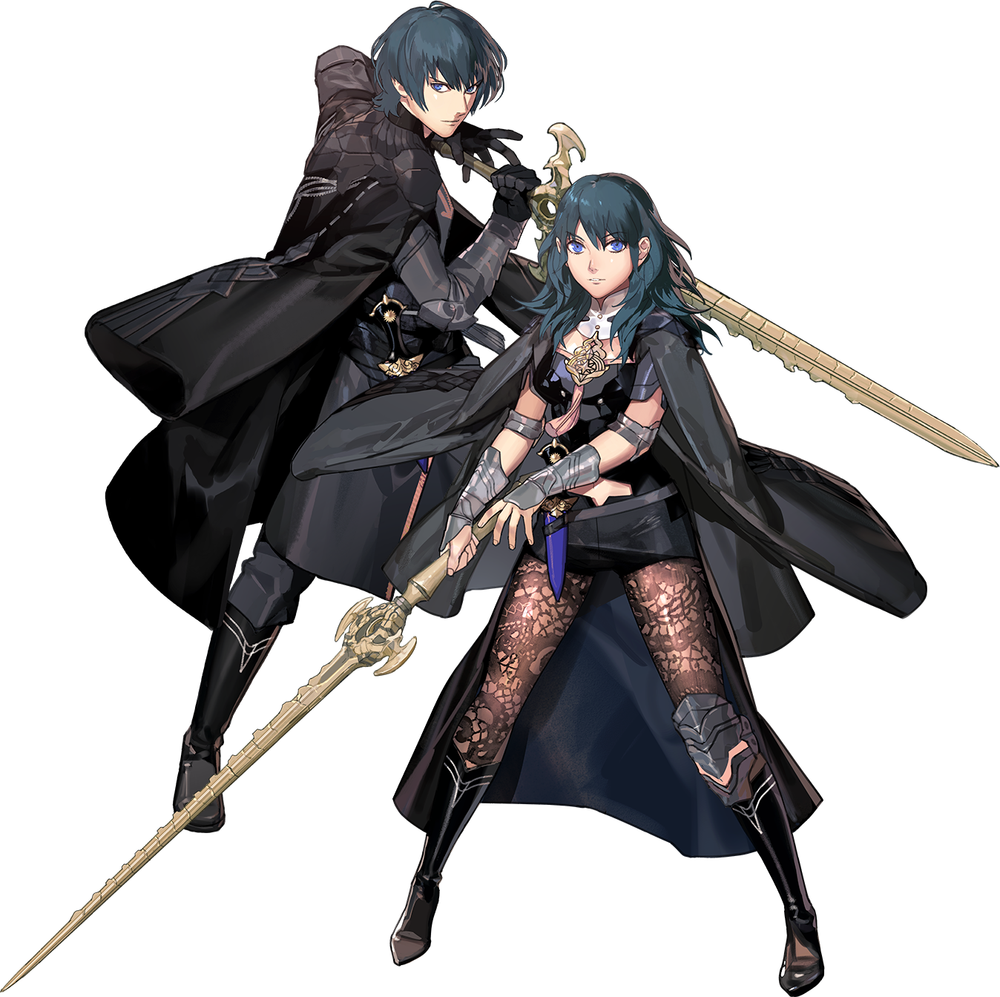

Biography Byleth is the main protagonist of Fire Emblem: Three Houses and serves as the player's avatar throughout the game. Originally a mercenary working alongside their father, Jeralt, Byleth's life changes after rescuing three students from Garreg Mach Monastery. Impressed by their combat ability and leadership, the Church of Seiros appoints Byleth as a professor at the Officers Academy, where they are given the responsibility of leading one of three student houses. In the Blue Lions route, Byleth becomes the mentor and professor of Dimitri Alexandre Blaiddyd and the students of the Holy Kingdom of Faerghus.
Personality Unlike many of the students they teach, Byleth is known for their calm, observant, and reserved personality. They often speak very little, allowing their actions and decisions to define their character. Although they initially appear emotionally distant, their relationships with the Blue Lions gradually reveal a compassionate mentor who genuinely cares about the well-being and growth of their students. Through guidance, patience, and unwavering support, Byleth becomes a trusted figure whose presence inspires others to overcome personal hardships.
Role in the Blue Lions Route As the professor of the Blue Lions, Byleth plays a central role in shaping the development of each student, particularly Dimitri. Throughout the story, Byleth provides guidance during both times of peace and conflict, encouraging the members of the Blue Lions to grow as individuals and work together as a team. Their mentorship becomes especially important as Dimitri struggles with grief, responsibility, and the burdens of leadership. Rather than leading through words alone, Byleth influences others through their actions, determination, and willingness to stand beside their students during the most difficult moments of the journey.
Relationships Byleth forms meaningful relationships with every member of the Blue Lions house through instruction, battles, and support conversations. Their strongest connection is with Dimitri, whose personal growth is closely tied to Byleth's guidance and encouragement throughout the route. As the story progresses, Byleth also earns the trust and respect of Dedue, Felix, Sylvain, Mercedes, Ashe, Ingrid, and many other characters across Fódlan.